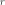
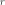
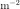
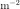

7.1.3. Absorption model theory¶
7.1.3.1. Introduction¶
In most astrophysical situations we have to take into account
absorption of photons between the emitting region and the observer.
Apart from a few standard models like the ones by Morrison & McCammon
(1983)
(our absm model) and Rumph et al.
(1994)
(our euve model) we have constructed our own absorption models based
upon the atomic database used by SPEX.
Essentially, we adopt a few steps, which will be described below. First, we produce a set of column densities, in different ways for the diferent absorption models (see Different types of absorption models). Next, using a dynamical model for the absorber we calculate its transmission (Dynamical model for the absorbers). For these calculations, we use our atomic database as described in Atomic database for the absorbers.
A basic assumption in all the absorption models is that there is no
re-emission, i.e. we look through an absorbing nmedium that has a very
small solid angle as seen from the X-ray source. This allows essentially
to calculate the transmission simply as with
 the optical depth.
the optical depth.
7.1.3.2. Thomson scattering¶
The above approach also allows us to include Thomson-scattering in the
transmission. Any source photon aimed at the observer but that suffers
from Thomson scattering is scattered out of the line of sight and hanec
in this approximation is not seen by the observer. We have included not
simply the Thomson cross-section  but have taken the
Klein-Nishina correction into account (see Rybicki & Lightman 1986, eqn. 7.5 (exact expression)
and 7.6 (approximations)). The evaluation of the exact formula for the cross
section is non-trivial, as terms up to the third power in
but have taken the
Klein-Nishina correction into account (see Rybicki & Lightman 1986, eqn. 7.5 (exact expression)
and 7.6 (approximations)). The evaluation of the exact formula for the cross
section is non-trivial, as terms up to the third power in
 cancel; we have extended the low-energy
polynomial approximation (7.6.a) of Rybicki & Lightman by comparing to
quadruple precision calculations using the exact formula, and made the
following approximation that has a relative accuracy of better than
for all energies, when evaluated using single
precision arithmetics:
cancel; we have extended the low-energy
polynomial approximation (7.6.a) of Rybicki & Lightman by comparing to
quadruple precision calculations using the exact formula, and made the
following approximation that has a relative accuracy of better than
for all energies, when evaluated using single
precision arithmetics:
7.1.3.3. Different types of absorption models¶
We have a set of spectral models available with different levels of sophistication and applicability, that we list below.
7.1.3.3.1. Slab model¶
The slab model calculates the transmission of a slab of material, where all ionic column densities can be chosen independently. This has the advantage that a spectrum can be fit without any knowledge of the ionisation balance of the slab. After a spectral fit has been made, one may try to explain the observed column densities by comparing the with predictions from any model (as calculated by , Cloudy, XSTAR, ION or any other existing (photo)ionization code).
7.1.3.3.2. Xabs model¶
In the xabs model, the ionic column densities are not independent
quantities, but are linked through a set of runs using a photo
ionization code. See the description of the xabs model for more
details about this. The relevant parameter is the ionization parameter
 , with
, with  the source luminosity,
the source luminosity,  the hydrogen density and  the distance from the ionizing
source. The advantage of the xabs model over the slab model is that
all relevant ions are taken into account, also those which would be
detected only with marginal significance using the slab model. In some
circumstances, the combined effect of many weak absorption features
still can be significant. A disadvantage of the xabs model happens of
course when the ionization balance of the source is different from the
ionization balance that was used to produce the set of runs with the
photo ionization code. In that case the xabs model may fail to give an
acceptable fit, while the slab model may perform better.
the hydrogen density and  the distance from the ionizing
source. The advantage of the xabs model over the slab model is that
all relevant ions are taken into account, also those which would be
detected only with marginal significance using the slab model. In some
circumstances, the combined effect of many weak absorption features
still can be significant. A disadvantage of the xabs model happens of
course when the ionization balance of the source is different from the
ionization balance that was used to produce the set of runs with the
photo ionization code. In that case the xabs model may fail to give an
acceptable fit, while the slab model may perform better.
7.1.3.3.3. Warm model¶
In the warm model, we construct a model for a continuous distribution
of column density  as a function of
as a function of  . It
is in some sense comparable to the differential emission measure models
used to model the emission from multi-temperature gas. Here we have
absorption from multi-ionization gas. Depending upon the physics of the
source, this may be a better approximation than just the sum of a few
xabs components. A disadvantage of the model may be (but this also
depends upon the physics of the source), that all dynamical parameters
for each value of are the same, like the outflow velocity
and turbulent broadening. If this appears to be the case in a given
source, one may of course avoid this problem by taking multiple,
non-overlapping warm components.
. It
is in some sense comparable to the differential emission measure models
used to model the emission from multi-temperature gas. Here we have
absorption from multi-ionization gas. Depending upon the physics of the
source, this may be a better approximation than just the sum of a few
xabs components. A disadvantage of the model may be (but this also
depends upon the physics of the source), that all dynamical parameters
for each value of are the same, like the outflow velocity
and turbulent broadening. If this appears to be the case in a given
source, one may of course avoid this problem by taking multiple,
non-overlapping warm components.
7.1.3.3.4. Hot model¶
In the hot model, we link the different ionic column densities simply by using a collisional ionsation (CIE) plasma. It may be useful in situations where photoionisation is relatively unimportant but the source has a non-negligible optical depth. A special application is of course the case for a low temperature, where it can be used to mimick the absorption of (almost) neutral gas.
7.1.3.3.5. Pion model¶
Finally we have in the pion model, which does a self-consistent photo ionization calculation of the slab of material.
7.1.3.4. Dynamical model for the absorbers¶
For each of the absorption models described in the previous section, we have the freedom to prescribe the dynamics of the source. The way we have implemented this in is described below.
The transmission of the slab is simply calculated as
with and the total continuum and line optical depth, respectively. As long as the thickness of the slab is not too large, this most simple approximation allows a fast computation of the spectrum, which is desirable for spectral fitting.
In particular UV observations of AGN show that the absorption lines can often be decomposed into multiple velocity components. In the X-ray band these are not always fully resolvable, which led us to the following approach. Each absorption line is split into different velocity components, using
(or the equivalent generalisation to the Voigt profile). Further, we take
where is the average velocity of the blend (a negative value
corresponds to a blue-shift or outflow),  is the
separation between the velocity components, and the r.m.s. width of the
blend
is the
separation between the velocity components, and the r.m.s. width of the
blend  is in general larger than the intrinsic
width
is in general larger than the intrinsic
width  of the components (do never confuse
both
of the components (do never confuse
both  ’s!). The normalization is defined in
such a way that . Finally, the total optical
depth
’s!). The normalization is defined in
such a way that . Finally, the total optical
depth  is given by
is given by
Here  is the oscillator strength,
is the oscillator strength,  the
wavelength in Å, the velocity dispersion in
units of km/s and the total column density of
the ion in units of .
the
wavelength in Å, the velocity dispersion in
units of km/s and the total column density of
the ion in units of .
This dynamical structure offers the user a broad range of applicability.
However, we advise the user to use the extension with
with caution! Always start with the most
simple case. The default values for are defined in such a way that
. This will produce the “normal” case of
single absorption lines. In that case, the velocity separation
is an irrelevant parameter.
Finally, we make a remark on the r.m.s. line width of individual lines,
. In our code, this only includes the
turbulent broadening of the lines. The thermal broadening due to motion
of the ions is included by adding it in quadrature to the tutbulent
broadening. The only exception is the slab model, where of course due
to the lack of underlying physics the thermal broadening is unknown, and
therefore in using the slab model one should be aware that
also includes a thermal contribution.